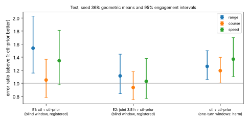
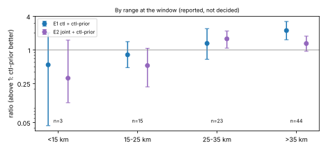
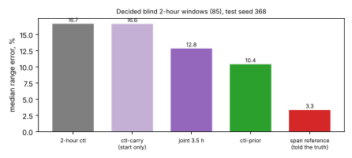
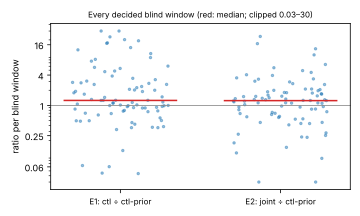

The carried prior where the ownship's legs outlast the window
2026-11-20 · spec 032 · seeds 366 (tuning, spent), 367 (validation), 368 (test) · gitma2
The owner's case at the standing configuration
- Ownship holds each leg 2–4 h, so some standing 2-hour windows see no ownship turn
- E1: ctl ÷ ctl-prior on those blind windows; E2: a joint solve over the same past bearings (3.5 h) ÷ ctl-prior
- Harm: ctl ÷ ctl-prior on one-turn windows
Registered before seeds 367 and 368 existed; test 100 engagements.
Registered rule: E1 better, E2 not separated, no harm

E1 1.54 [1.16, 2.03] · E2 1.11 [0.84, 1.45] · one turn 1.26 [1.06, 1.50]
A far-range effect

Beyond 35 km E1 is 2.2; under 35 km about 1.0. Range and contact loss cannot be separated here.
Error on blind windows

The prior, not the carried start, does the work (ctl-carry ÷ ctl-prior 1.52 on this seed).
Every decided window

E1: better in 59%, twice as bad in 18%. E2: better in 61%, twice as bad in 19%.
What the panel narrowed
- Half the blind windows lost contact (median 72 km) and are unscored
- E1 is "more data beats no data"; E2, the fair comparison, is level
- The prior came from a window that saw a turn (83 of 85); seeds swung (1.32, 0.87, 1.54)
- Carried uncertainty not calibrated; one simulator, contact 1
Next (the owner's choice)
- Recommended: adopt 2-hour ctl-prior for the tended contact; close the track with a synthesis
- Or: E2 at ordinary ranges · repair the hand-over · lost-contact prediction
Write-up: /blog/2026/11/20/long-legs · Record: experiments/20261120-legs/ · Figures: scripts/research/legs_charts.py